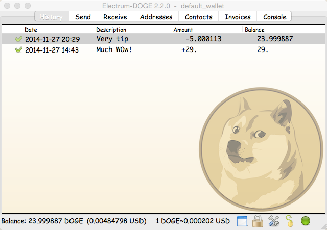

Version 2.2 |
Windows Standalone
Github Source Code |
Bug Tracker

Development:
Project page on GitHub
Discussion:
Dogecoin Forum |
/r/dogecoindev post
Bug reports:
Github
Run your own server:
How-to
Twitter:
@ElectrumDoge
Electrum-Doge was born as a fork of the Electrum Bitcoin wallet.
It is a lightweight wallet that only downloads block headers instead of the whole blockchain which makes it faster to sync and uses less computer resources, while still being secure and not relying on a trusted third party.
Among it's interesting features are:
Electrum-Doge uses a 128-bits random seed to generate your private keys. The seed can be represented as a 12-words
mnemonic code. You do not need to perform regular backups, because your wallet can be recovered from the seed that you can
memorize or write on paper.
Example:
hexadecimal: 431a62f1c86555d3c45e5c4d9e10c8c7 mnemonic: "constant forest adore false green weave stop guy fur freeze giggle clock"There are 2 128 possible seeds for a deterministic wallet in Electrum-Doge. What is the gap limit?
The gap limit is the maximum number of consecutive unused addresses in your deterministic sequence of addresses. Electrum-Doge uses a gap limit to stop looking for addresses, it is set to 5 by default, so the client get all addresses until 5 unused addresses are found.
What does it mean to "Freeze" an address in Electrum-Doge?When you freeze an address, the funds in that address will not be used for new transactions. You can not send coins if you don't have enough funds in the non-frozen addresses.
What encryption is used for wallets?Electrum-Doge uses AES-256-CBC to encrypt the seed and private keys in the wallet.
Does Electrum-Doge support cold wallets?Yes. It also supports an easy and safe way to spend your coins in cold storage from an online computer using the Master Public Key.
Can I import addresses from other cryptocoin clients?Yes, you could import the private keys from other clients, but you will have to keep a backup of those keys separately as they won't become part of your Electrum-Doge seed.
Where is my wallet file located?The default wallet file is called default_wallet which is created when you first run the application and located under
the /wallets folder.
The following example refers to Electrum-Doge :
On Windows
Show hidden files Go to \Users\YourUserName\AppData\Roaming\Local\Electrum-DogeOn Mac
Open Finder Go > Go to folder (shift+cmd+G) and type ~/.electrum-dogeOn Linux
Home Folder Go > Location and type ~/.electrum-dogeCan Electrum-Doge create and sign raw transactions?
Electrum-Doge lets you create and sign raw transactions right from the user interface using a form.